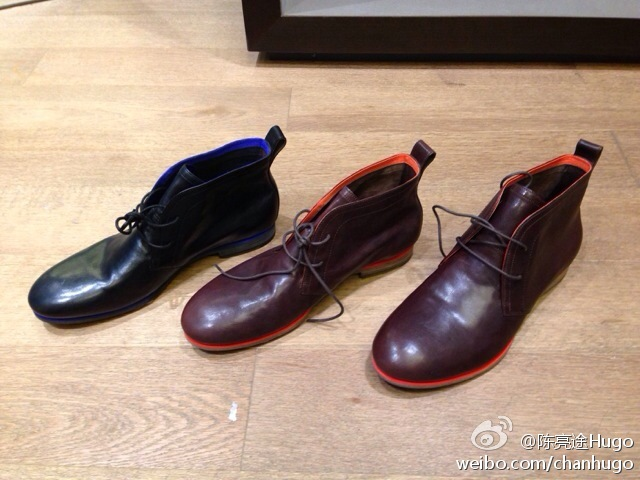

砖家逻辑//@AndyPan童鞋: 我大一的时候有次到了天津大学食堂，门口有现场做鸡蛋摊煎饼的爷儿们。有个女大学生还价“鸡蛋多少钱？”“1块”“饼多少钱？”“5毛”“那为啥卖两块？！”“我白给你摊啊?!” 记忆犹新，至今仍可以解释专家的逻辑。@陈亮途Hugo:#营销#很多人说苹果产品赚取暴利，我不明白为什么他们总是看产品成本，企业还有其他成本啊！品牌卖的是价值、达成的是市场。除非是寡头垄断，否则一切在市场上赚到的都不是暴利。这些价值，就是营销创造出来的！ 我在:华夏西路 